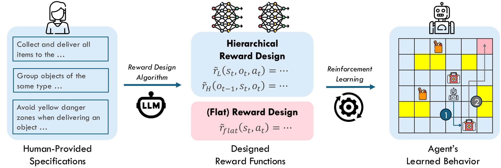
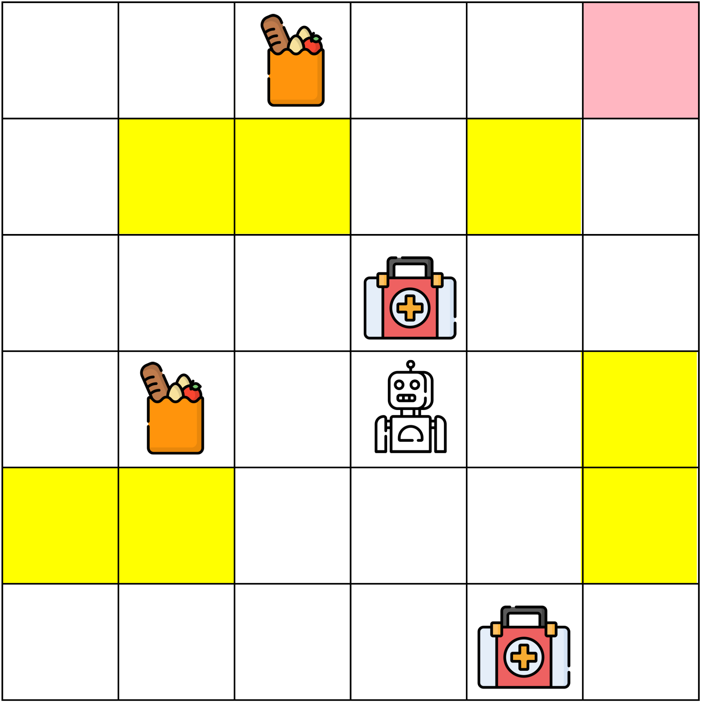
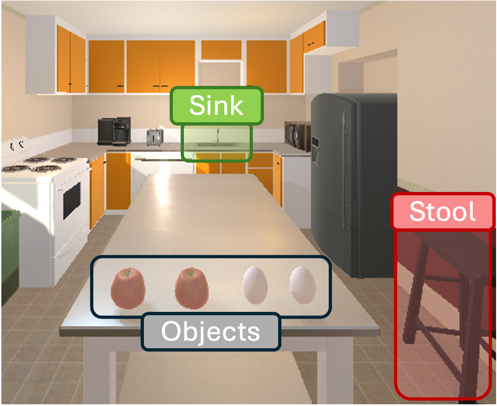
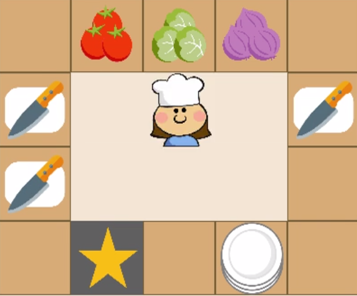
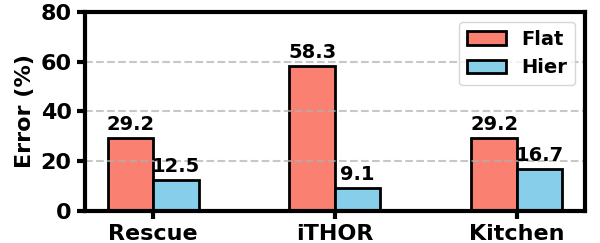
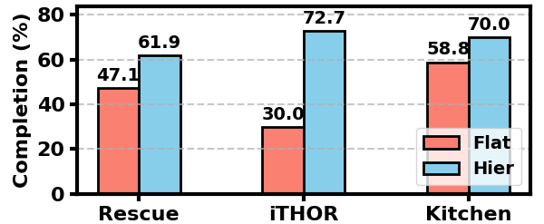
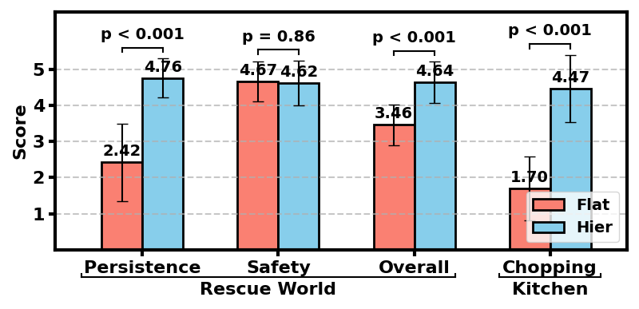

People naturally break long tasks into subtasks, and hierarchical RL agents are built the same way. However, reward design for hierarchical agents remains largely unexplored.

Figure 1. HRDL splits reward design into a high-level reward and a low-level reward. L2HR, our approach, uses language models to turn a person's written specification into these rewards.
TL;DR: Long-horizon behavior specifications are about what subtasks an agent does, in which order, and how. We formalize reward design for hierarchical RL agents and show that LLM-generated hierarchical rewards align agents with language specifications far better than flat rewards.
When training artificial intelligence (AI) to perform tasks, humans often care not only about whether a task is completed but also how it is performed. As AI agents tackle increasingly complex tasks, aligning their behavior with human-provided specifications becomes critical for responsible AI deployment. Reward design provides a direct channel for such alignment by translating human expectations into reward functions that guide reinforcement learning (RL). However, existing methods are often too limited to capture nuanced human preferences that arise in long-horizon tasks. Hence, we introduce Hierarchical Reward Design from Language (HRDL): a problem formulation that extends classical reward design to encode richer behavioral specifications for hierarchical RL agents. We further propose Language to Hierarchical Rewards (L2HR) as a solution to HRDL. Experiments show that AI agents trained with rewards designed via L2HR not only complete tasks effectively but also better adhere to human specifications. Together, HRDL and L2HR advance the research on human-aligned AI agents.
People naturally break long tasks into subtasks, and hierarchical RL agents are built the same way. However, reward design for hierarchical agents remains largely unexplored.
“Collect and deliver all supplies in the environment.”
“Group objects of the same type: deliver all supplies of one type before switching.”
“Avoid yellow danger zones when delivering an object.”
Existing reward design methods produce a single flat reward, which scores each action based only on the current state. Because it can't tell which subtask the agent is working on or has just finished, it can't capture preferences about the order of subtasks or how each one should be done. Prior work on hierarchical RL usually assumes these rewards are given; HRDL formalizes how to design them.
Figure 2. HRDL lies at the intersection of hierarchical RL and reward design from language.
HRD replaces the single flat reward with two rewards that are aware of the agent's subtasks: a high-level reward for choosing which subtask to do next, and a low-level reward for how each subtask is carried out.
| Reward | What it looks at | What it scores |
|---|---|---|
| FlatPrior work | state action | Each action |
| High-levelHRD | previous subtask state next subtask | Which subtask to do next |
| Low-levelHRD | state current subtask action | Each action, knowing which subtask it serves |
Highlighted inputs carry subtask information that a flat reward never sees.
“Deliver all supplies of one type before switching.” Following this rule requires knowing what was delivered last, which a flat reward has no way of tracking.
“Avoid the stool while going to pick up or drop off an egg.” A flat reward can see where the agent is, but not which subtask it is working on.
HRDL keeps the rewards a task already has and adds an alignment reward at each level, generated from the user's written specification:
Highlighted terms are generated from the natural-language specification.
The original rewards make sure the agent still completes the task, while the alignment rewards shape how it does so. Each level is a standard RL problem, so off-the-shelf algorithms can train it (PPO for the low level and DQN-style methods for the high level).
Hierarchical rewards can express everything flat rewards can, and more.
Any flat reward can be written as a hierarchical one that simply ignores its subtask inputs. The reverse isn't true: some specifications can't be expressed with a flat reward at all (Properties 1 and 2, Appendix B.3).
L2HR prompts an LLM to turn a natural-language specification into executable high- and low-level reward functions. It does this without any feedback during training on whether the agent is actually following the specification.
Task description: The objective is to pick up all apples and eggs on the dining table and place them in the sink... Environment context: class ThorPickPlaceEnv(gym.Env): ... Relevant task spaces: The agent's option/subtask space consists of picking up and placing the two types of objects... Low-level user preference: The agent should avoid the stool while on its way to pick up or drop an egg... High-level user preference: The agent should pick up an object type that is different from what was previously picked... Additional info: Do not use function attributes or global variables...
# High-level preference reward
def get_high_level_pref_gpt(state: Dict, prev_option: int, option: int) -> Tuple[float, Dict[str, float]]:
...
return reward, reward_components
# Low-level preference reward
def get_low_level_pref_gpt(state: Dict, option: int, action: int) -> Tuple[float, Dict[str, float]]:
...
return reward, reward_componentsThe LLM generates several candidate low-level alignment rewards (8 in our experiments), and each one is used to train a low-level policy. Only the policies that still complete their subtasks are kept.
The LLM then generates candidate high-level alignment rewards, each used to train a high-level policy on top of one of the kept low-level policies. Reward pairs whose agents still complete the task are returned.
Each candidate must compile and may only use variables exposed in the prompt. In practice, at least one candidate in every batch passes these checks.
We evaluate on three long-horizon domains. In Rescue World and iTHOR, some specifications can't be captured by a flat reward; in Kitchen, they can.

Collect and deliver all supplies in a disaster-response map.

Carry apples and eggs from the dining table to the sink.

Prepare a salad with lettuce, tomatoes, and onions.
We compare L2HR (Hier) against two baselines: an LLM that generates a flat reward from the same specification (Flat), and an agent trained on the task reward alone (Task). Each LLM-based method produces 24 reward candidates.

Figure 5. Syntax error rates for LLM-based reward generation (24 candidates per configuration).
Hierarchical generation produces far fewer errors in every domain. Without access to the previous
subtask, the flat approach often invents variables that don't exist, such as
last_delivered_type.

Figure 6. Share of syntactically valid reward candidates that preserve task feasibility.
In every domain, Hier rewards are more likely to still let the agent complete the task. Flat rewards tend to rely on spurious heuristics, so the agent can collect reward in unintended ways.
| Domain | Method | High-Level | Low-Level | Total | |||
|---|---|---|---|---|---|---|---|
| Reward ↑ | Expert % ↑ | Reward ↑ | Expert % ↑ | Reward ↑ | Expert % ↑ | ||
| Rescue World | Task | 11.22 ± 5.57 | 20.00 | −16.46 ± 5.49 | 0.00 | 73.80 ± 5.70 | 0.00 |
| Flat | 9.38 ± 7.02 | 12.50 | −2.62 ± 5.19 | 62.50 | 85.13 ± 9.33 | 12.50 | |
| Hier | 16.65 ± 6.93 | 76.92 | −0.69 ± 1.58 | 76.92 | 93.98 ± 9.01 | 69.23 | |
| iTHOR | Task | 4.10 ± 1.34 | 0.00 | −23.38 ± 1.86 | 0.00 | 12.31 ± 0.66 | 0.00 |
| Flat | 7.67 ± 4.48 | 0.00 | −35.20 ± 12.42 | 0.00 | 3.27 ± 9.31 | 0.00 | |
| Hier | 14.19 ± 2.23 | 87.50 | −3.75 ± 8.14 | 75.00 | 37.68 ± 6.68 | 62.50 | |
| Kitchen | Task | 0.00 ± 0.00 | 0.00 | – | – | 0.75 ± 0.00 | 0.00 |
| Flat | 0.06 ± 0.13 | 10.00 | – | – | 0.80 ± 0.12 | 10.00 | |
| Hier | 0.39 ± 0.05 | 92.86 | – | – | 1.08 ± 0.05 | 92.86 | |
Table 1. Alignment is measured with handcrafted ground-truth rewards. Total is the sum of the task reward and both alignment rewards. Expert % is the share of policies that reach the maximum possible return. Flat and Hier results include only candidates that complete the task.
Hier achieves the best high-level alignment in every domain, since rules like persistence and diversity depend on the previous subtask. Kitchen shows that hierarchy helps even when a flat reward is theoretically sufficient: only one flat candidate encoded the chopping order correctly.
In an IRB-approved study, 30 participants watched videos of Flat and Hier agents in Rescue World and Kitchen, without knowing which was which, and rated how well each followed the specification on a 1–5 scale.

Figure 7. Participants' ratings of how well each agent followed the specification.
| Method | Rescue World | Kitchen | ||
|---|---|---|---|---|
| Persistence ↑ | Safety ↑ | Overall ↑ | Chopping ↑ | |
| Flat | 12.50% | 50.00% | 12.50% | 10.00% |
| Hier | 76.92% | 61.54% | 53.85% | 71.43% |
Table 2. Share of candidate policies that received a perfect alignment score from every participant.
Policies trained with flat vs. hierarchical rewards generated from the same specification.
Flat
Hier (L2HR)
Flat
Hier (L2HR)
Flat
Hier (L2HR)
HRD is more expressive than flat reward design and works with existing RL algorithms. L2HR, our first solution to HRDL, achieves considerably better or comparable results in both numerical and human evaluations. Natural next steps include testing HRD in real-world robotics and richer reward generation with evolutionary optimization or human feedback.
@inproceedings{qian2026hierarchical,
title = {Hierarchical Reward Design from Language: Enhancing Alignment of Agent Behavior with Human Specifications},
author = {Qian, Zhiqin and Diaz, Ryan and Seo, Sangwon and Unhelkar, Vaibhav},
booktitle = {Proceedings of the 25th International Conference on Autonomous Agents and Multiagent Systems (AAMAS)},
year = {2026}
}